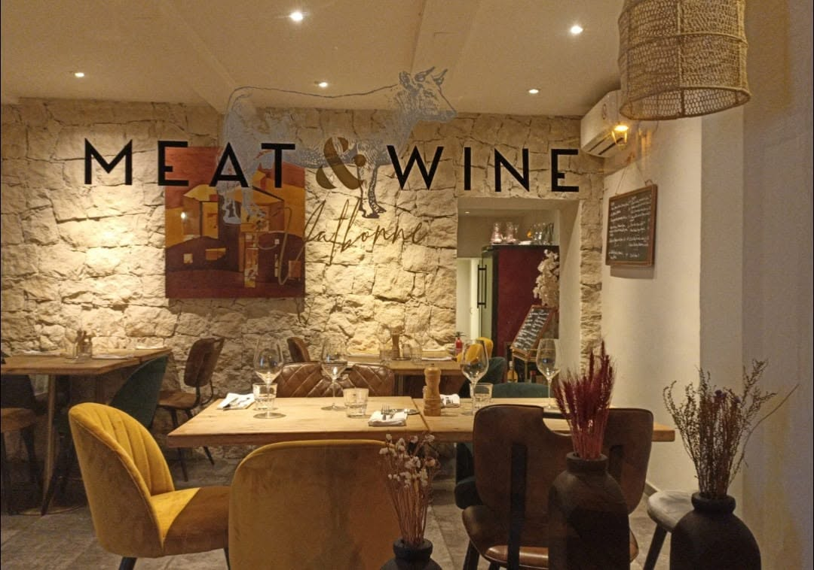

Table de Caractère
Viandes d'Exception & Grands Vins
Une expérience culinaire rustique-chic dans un cadre calme et chaleureux.
Nous Contacter / RéserverUn cadre agréable & calme
Idéal pour vos dîners en groupe, en solo, ou pour les touristes de passage à la recherche d'une table authentique. Nous vous accueillons pour un moment de détente absolue autour d'un service à table soigné, sur notre terrasse ombragée ou au bar.
Terrasse
Repas sur place
Bar sur place
Service Traiteur
⚠️ Note : Pour garantir la qualité de nos pièces de viande, nous ne proposons pas de service de livraison ni de vente à emporter.

Informations Pratiques
- 📍 Stationnement : Parking gratuit et stationnement facile juste devant l'établissement.
- 💳 Paiements : Cartes bancaires (crédit/débit) acceptées avec plaisir.
- 🚽 Commodités : Toilettes équipées et accessibles à disposition.
- 📅 Important : La réservation est fortement recommandée pour le service du dîner.
Prendre Table ou Nous Contacter
Pour réserver votre table pour le dîner ou échanger sur notre service traiteur, vous pouvez nous joindre directement :
Ligne Directe
07 86 82 06 88
Réservation fortement recommandée pour le service du soir.